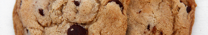

The Know-How Guide to Making the Best Cookies
Learning OOP (Object Oriented Programming) through Cookies!
Object Oriented Programming
10/17/24: by Brandon Cekovsky My Email!
OOP stands for Object Oriented Programming, which is a good thing. In baking, however, OOP means that you messed up the recipe. See what I did there? Maybe? Well, writing a program is like following a recipe. (If you would just like the recipe, follow it by going to this link.) I appreciate cookies and programs more, pay more attention to them, and improve my ability to make them when I understand how they are made.
But maybe you aren’t a fan of programming. Are your cookies just not quite right? Are they soggy?? Maybe too dry? If you answered yes to these questions, keep on reading! By the end of this guide, your cookies will be better than Chips Ahoy.
This guide will walk you and your baking skills through detailed and easy-to-follow steps to make your cookies into perfection! We start with ingredients, then work our way through the process of the cookies, and maybe add some extra personality to make cookies better than your friends! We will also teach you a little about Object Oriented Programming (OOP).
So, what are commands, objects, and rules?
Commands: They incorporate an action towards an object that cannot move on its own. Commands are instructions that the program follows to carry out a specific task. (Arguments/Parameters)
Objects: Stands alone, and needs rules and commands in order to be used.
Rules: If broken, this triggers a response that involves consequences while on the web.
It's Recipe Time!
Ingredients:
- 2 and 1/4 cups (280g) all-purpose flour (spooned & leveled)
- 1 teaspoon baking soda
- 1 and 1/2 teaspoons cornstarch
- 1/2 teaspoon salt
- 3/4 cup (170g / 12 Tbsp) unsalted butter, melted & cooled 5 minutes
- 3/4 cup (150g) packed light or dark brown sugar
- 1/2 cup (100g) granulated sugar
- 1 large egg + 1 egg yolk, at room temperature
- 2 teaspoons pure vanilla extract
- 1 and 1/4 cups (225g) semi-sweet chocolate chips or chocolate chunks
- Sprinkles of your choosing (optional)
- Butterscotch chips (optional)
Cookie Process
| Order of Steps |
English |
JavaScript |
| 1. |
Whisk Flour, Baking Soda, Cornstarch, and Salt together into a large bowl, then set aside for later. |
whiskLargeBowl(flour, baking-soda, cornstarch, salt) |
| 2. |
In a medium bowl, whisk melted butter, brown sugar, and granulated sugar together until brown sugar lumps are gone. Whisk in egg and egg yolk, then the vanilla extract. |
whiskMediumBowl(melted-butter, brown-sugar, granulated-suga,; egg, egg-yolk) |
| 3. |
Pour medium bowls contents into the larger bowl with the dry ingredients, and mix with a large spoon or spatula. |
pour(){ whiskmediumbowl + whisklargebowl, mix(largespoon)} |
| 4. |
Add chocolate chips into the dough, and make sure there are enough chips for ratio. Add more or less chocolate chips for a ratio of your own liking. |
addIn(chocolateChips) |
| 5. |
For a little more personality and to stand out against your friends, add some butterscotch chips or sprinkles. |
standOut(butterscotch-chips, sprinkles) |
| 6. |
Cover the dough bowl with plastic wrap tightly, and place in the fridge for at least 3 hours. It is recommended that you chill the dough overnight for an easier spread. |
coverDough(wrap-tightly 3hours-fridge, chillout-dough) |
7. |
Once dough is hardened, remove from the fridge and allow it to soften at room temperature for 10 minutes. |
hardDough(remove-fridge, soften-10-minutes) |
| 8. |
Preheat your oven to 325°F. Line large baking sheets with parchment paper. Set aside. |
preHeat(325F, bakingsheets-parchment-paper, set-aside) |
| 9. |
Using a spoon, measure 3 TBSP of dough for XL cookies or 2 TBSP for M/L cookies. Roll into a ball, and place onto a baking sheet. Make sure these balls are spaced out evenly for proper baking. Repeat as needed. |
doughBalls(roll-dough, 3/2 TBSP, space-balls-evenly) |
| 10. |
Place cookie sheet in the oven once it is preheated for around 12-13 minutes, or until the edges of the cookies are lightly browned. Take out the cookies once they are done, and let them cool for around 10 minutes. The cookies will still be soft, so if you want to add some more chocolate chips, that is totally fine! |
bakeCookies(12-13-minutes, cool-10-minutes) |
| 11. |
Cookies can stay fresh in the fridge for up to a week if they are covered completely. |
freshness(in-fridge, up-to-a-week, covered-completely) |
Here are some links to more information about Object Orinted Programming!
https://medium.com/upperlinecode/object-oriented-classes-like-baking-cookies-ae7f015d5560
https://medium.com/@chindowns/oop-explained-for-cooks-f691ec8a06ea